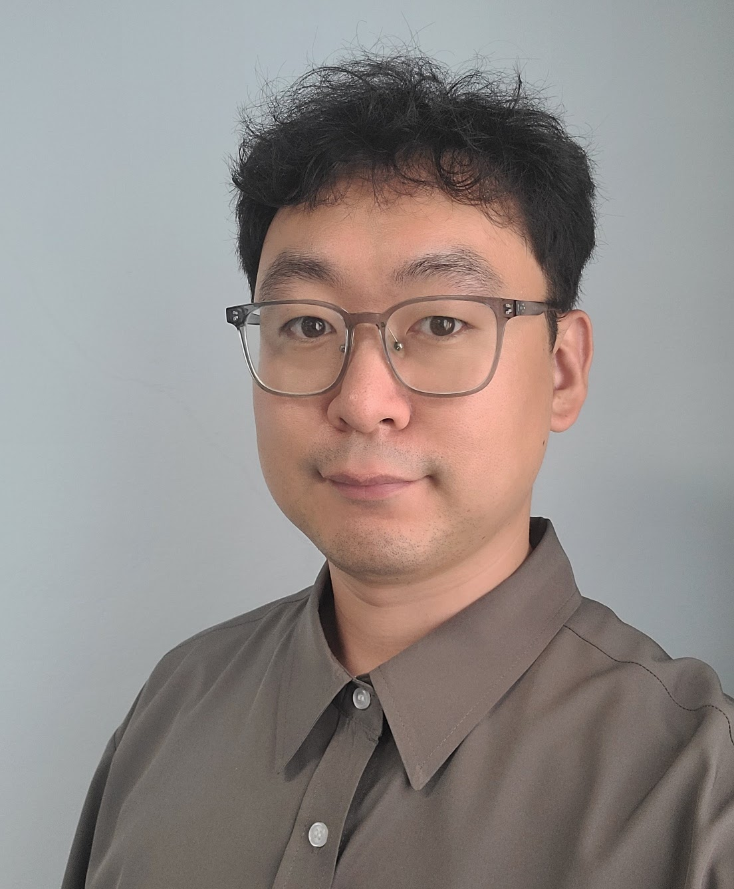

![이지민 프로필 사진]()
Members
Members
FPFT Lab의 연구진과 학생 구성원입니다.

Principal Investigator
김응희 Eunghee Kim
조교수 · 전남대학교 식품공학과
식품가공과 센싱 시스템을 기반으로 물성·유변학·향·분광·영상 데이터를 생산하고, 전체 신호를 활용한 AI 기반 식품 품질 분석 및 현장 적용 연구를 수행합니다.
Education
- 서울대학교 식품생명공학 전공 · 학사
- 서울대학교 농생명공학 전공 · 석사
- 서울대학교 농생명공학 전공 · 박사
Experience
- 2025.03–현재 전남대학교 식품공학과 · 조교수
- 2023.08–2025.02 한국식품연구원 스마트제조사업단 · 박사후연구원
- 2021.09–2023.07 서울대학교 식품바이오 융합연구소 · 선임연구원·연구교수
- 2021.08–2022.08 연세대학교 식품영양학과 · 객원교수
- 2019.03–2021.02 성신여자대학교 바이오식품공학과 · 강사
Current Members
Graduate Students
![이승학 프로필 사진]()
![주세령 프로필 사진]()
![이수현 프로필 사진]()
B.S.–M.S. Integrated Students
![김성무 프로필 사진]()
![김민서 프로필 사진]()